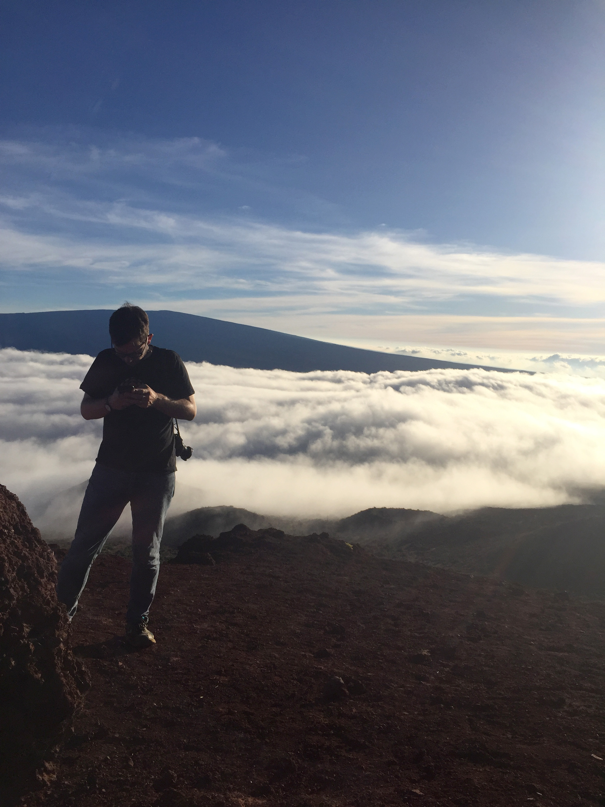

Toronto, Ontario · Journalism
James
Keller
National Editor · The Globe and Mail
I oversee national news, politics, and investigations at The Globe and Mail — Canada's newspaper of record — from Toronto.

James Keller
Toronto